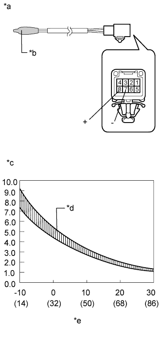

REAR EVAPORATOR TEMPERATURE SENSOR > INSPECTION |
| 1. INSPECT REAR EVAPORATOR TEMPERATURE SENSOR |
|  |
Measure the resistance according to the value(s) in the table below.
| Tester Connection | Condition | Specified Condition |
| 7 (-) - 8 (+) | -10°C (14°F) | 7.30 to 9.10 kΩ |
| -5°C (23°F) | 5.65 to 6.95 kΩ | |
| 0°C (32°F) | 4.40 to 5.35 kΩ | |
| 5°C (41°F) | 3.40 to 4.15 kΩ | |
| 10°C (50°F) | 2.70 to 3.25 kΩ | |
| 15°C (59°F) | 2.14 to 2.58 kΩ | |
| 20°C (68°F) | 1.71 to 2.05 kΩ | |
| 25°C (77°F) | 1.38 to 1.64 kΩ | |
| 30°C (86°F) | 1.11 to 1.32 kΩ |
| *a | Component without harness connected (Rear Evaporator Temperature Sensor) |
| *b | Sensing Portion |
| *c | Resistance (kΩ) |
| *d | Allowable Range |
| *e | Temperature °C (°F) |